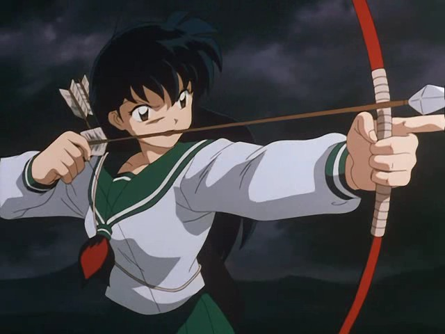

Inuyasha (犬夜叉, "Medio perro") es el protagonista principal, así como el personaje principal, en la serie de manga InuYasha y su adaptación al anime.
Es el hijo hanyō de un gran yokai, conocido como Inu no Taishō y una madre humana llamada Izayoi; estuvo atado a un árbol sagrado acausa de una flecha sagrada que la sacerdotisa Kikyō le lanzo cuando este intento capturar la perla de Shikon. Inuyasha buscaba la Joya, pensando que podría transformarlo en un yokai en toda regla. Kagome Higurashi, la reencarnación de Kikyō, lo liberó de este hechizo, pero poco después, accidentalmente rompió la perla en cientos de fragmentos. A regañadientes, aceptaron trabajar juntos como un equipo para recuperar todos los fragmentos que se habían esparcido por el Japón feudal antes de que cayeran en las manos equivocadas. Con el tiempo desarrollaron un vínculo estrecho y finalmente se enamoraron. Tras casarse, ambos consumaron su relación cuando tuvieron una hija a la que llamaron Moroha.
Kagome Higurashi («日暮ひぐらしかごめ» Higurashi Kagome?), llamada Aome en el doblaje latino de la serie, es la protagonista principal femenina de la serie de anime y manga InuYasha. El personaje principal, Inuyasha, es su interés amoroso y este interés es recíproco, lo que se confirma con el nacimiento de su hija Moroha, una de las protagonistas de Hanyo no Yashahime. Ella es la reencarnación de la sacerdotisa Kikyo que murió muchos siglos atrás por culpa de Naraku y por ende, con su nacimiento, se produjo la reaparición de la Perla de Shikon que se supone había sido destruida cuando el cadáver de la sacerdotisa fue quemado junto a la joya. Por culpa de un incidente con un cuervo Yokai, la Perla de Shikon se rompió en miles de fragmentos que se dispersaron por todo el Japón de la Era Sengoku, obligando a Kagome en conjunto con el Hanyo Inuyasha a viajar por todo el país a buscar los mencionados fragmentos antes de que caigan en las manos equivocadas. Durante su aventura, Kagome conoce a varios personajes que de una u otra manera están ligados a la perla y a un peligroso ser llamado Naraku.
